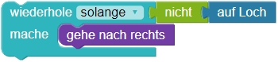
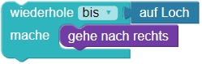

Solange / Bis Murmeln


Programmiere den Roboter:
Der Roboter soll die Murmeln  jeweils im Loch
jeweils im Loch  in der selben Zeile ablegen.
in der selben Zeile ablegen.
Hinweis: Der Roboter kann höchstens eine Murmel auf einmal tragen.
Bitte schau dir vorab die Erläuterungen der Bausteine unter "weitere Hinweise" an.
Bitte schau dir vorab die Erläuterungen unter "weitere Hinweise" an.
Weitere Hinweise:
Der Baustein wiederhole solange/bis wiederholt etwas solange bzw. bis eine Bedingung erfüllt ist.
Dieser Baustein wird genutzt, wenn man die Anzahl der Wiederholungen im Voraus nicht kennt.
 oder 
Hier kennst du die Anzahl der Felder zwischen Murmel und Loch nicht. Hier kennst du die Anzahl der Zeilen mit einer Murmel und einem Loch nicht:


Weitere Hinweise:
Mit der while-Schleife kann etwas so lange wiederholt werden, wie
eine Bedingung erfüllt ist.
Wenn der Roboter sich bewegen soll, bis eine bestimmte Bedingung erfüllt ist,
so kann das Schlüsselwort not (nicht) verwendet werden.
while not aufLoch():
rechts()
Hier kennst du die Anzahl der Felder zwischen Murmel und Loch nicht. Hier kennst du die Anzahl der Zeilen mit einer Murmel und einem Loch nicht:
Beachte: Dein Programm muss mit allen Testfällen zurechtkommen.